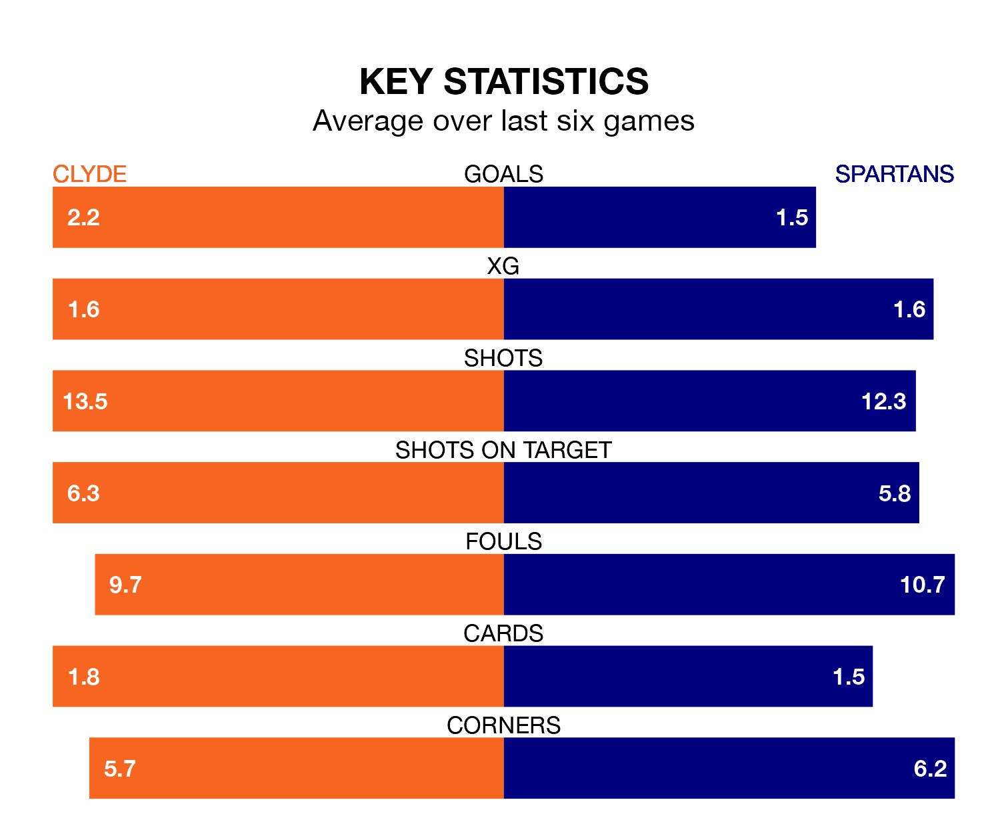

Struggling Clyde face Spartans at the Fountain of Youth Stadium on Saturday looking to build on a win in their last league outing.
After securing all three points with a 2-1 victory over Bonnyrigg Rose Athletic on March 16, the Bully Wee sit bottom of League Two.
They travel to play a Spartans side fourth in the standings, who lost in their last match, 6-2 against Dumbarton.
In Blair Henderson, Spartans have the league's most on-form striker so far this season. He has notched 15 goals in 29 appearances.
His goal rate of one every 167 minutes is slightly quicker than that of Martin Rennie, Clyde's top scorer with a goal every 167 minutes, and a total of 10 goals in 23 games.
With 45 goals in 29 games so far this season, the Spartans are the league's joint-third-highest scorers with 1.6 goals per game. And they are conceding at an average rate, letting in 38 goals at a rate of 1.3 per game.
The Bully Wee, meanwhile, are average scorers, with 1.3 goals per game. They have conceded 1.8 goals per game.
The hosts are in reasonable form in League Two, with four wins and two losses from their last six games.
With two wins and two draws over that period, the away side's form is worse – they have taken eight points from 18, compared to Clyde's 12.
In the last three years, Clyde and Spartans have played each other on three occasions. Spartans won one of them and they drew the other.
Their last meeting was on January 27, when they played out a 1-1 draw.
Saturday's match will be refereed by Lloyd Wilson, who has taken charge of three League Two games so far this season, issuing no red cards and booking 11 players. He has awarded two penalties.
He is yet to oversee a match featuring either Clyde or Spartans this season.
Updated: 10:19 (UTC), 22/03/24